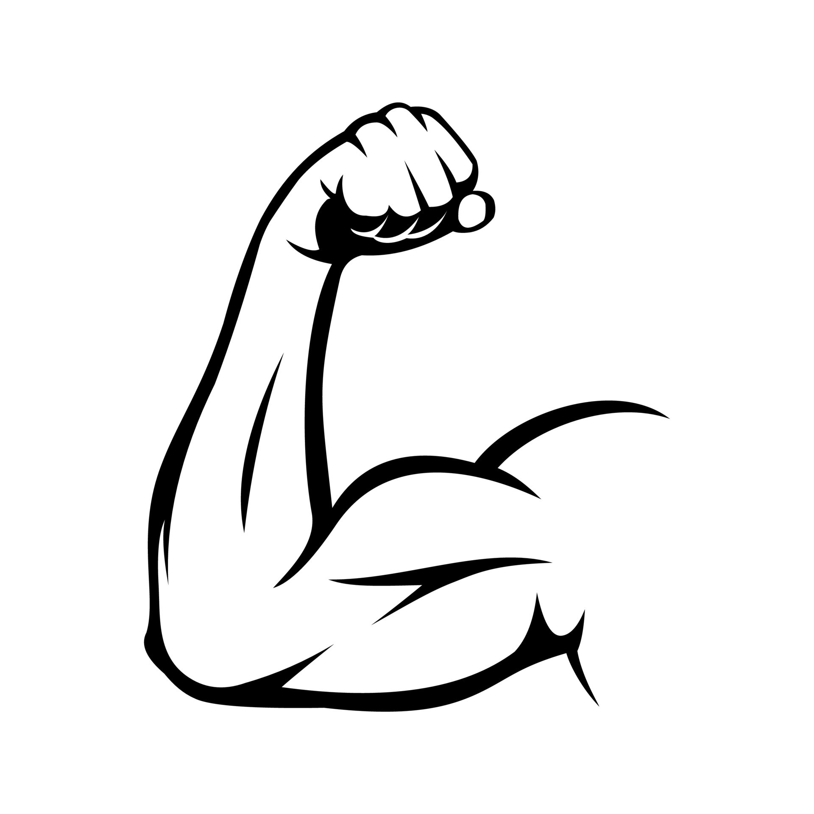

Для начала мы узнаем показатели вашего персонажа.
- Готовые статы
- Самое простое это взять готовые значения и распределить по нужным вам показателям:
8 10 12 13 14 15 - Случайные значения
- Вы можете задать случайные значения. Обычно кидают 4 кубика с 6 гранями
и убирают наименьшее значение. В нашем случае рандомайзер всё сделает за вас.
Лишь нажмите на кнопку:
- СИЛА:
- ЛОВКОСТЬ:
- Насколько ваш персонаж ловок. Как он легко он может увернуться или спрятаться.
Навык: Акробатика, Ловкость рук, Скрытность
Главный показатель для Монаха, Плута, Следопыта - ТЕЛОСЛОЖЕНИЕ:
- Насколько ваш персонаж крепок. Как много он может выдержать физически.
Влияет на количество здоровья и возможность пережить магические удары - ИНТЕЛЛЕКТ:
- Насколько ваш персонаж умён. Как много он знает и сколько книг прочитал.
Навык: История, Магия, Природа, Расследование, Религия
Главный показатель для Волшебника и Изобретателя - МУДРОСТЬ:
- Насколько много ваш персонаж знает о жизни. Знает как лечить, что замечать и что делать.
Навык: Внимание, Выживание, Дрессировка, Медицина, Проницательность
Главный показатель для Жреца, Друида и Следопыта - ХАРИЗМА:
- Насколько ваш персонаж красив и приятен в общении. Он знает как обмануть, убедить, напугать.
Навык: Запугивание, Исполнение, Обман, Убеждение
Главный показатель для Барда, Колдуна, Паладина и Чародея

Насколько ваш персонаж силён. Как сильно он может толкать или тянуть что-то. Навык: Атлетика
Главный показатель для Варвара, Война, Паладина и Монаха